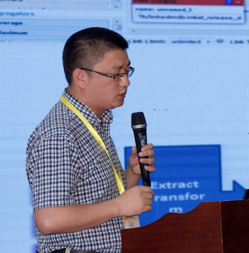

个人简介
沈志宏，研究员，博士生导师，现任中国科学院计算机网络信息中心大数据部副主任，大数据分析与计算技术国家地方联合工程实验室总工程师，研究方向为海量数据关联融合、图数据分析挖掘、语义网。目前主持国家重点研发计划“科学大数据管理系统”课题，曾作为技术骨干参与中科院“十一五”“十二五”信息化项目、中科院先导专项、国家基础条件平台项目等。主持开发分布式数据管理发布系统VisualDB、科学数据搜索引擎Voovle、大数据流水线PiFlow、融合数据库系统PiDB等软件系统，申请软件发明专利22项，授权4项，在国内外重要刊物及会议发表学术论文30余篇，学术编著1部，译著1部。热爱软件开源，参与和主持国际开源项目多项，软件开发类编著3部。
承担项目
- 中国烟草总公司科技重大专项项目"烟草科研数据融合与关联挖掘关键技术研究",项目负责人,2018-2019
- 国家自然科学基金大数据知识管理服务平台,项目负责人,2017
- 中国科学院信息化专项"科学大数据工程"课题"科学大数据管理与分析平台建设",课题负责人,2016-2020
- 国家重点研发计划“科学大数据管理系统”课题“系统集成与应用示范”,课题负责人,2016-2019
- 广州XX信息技术公司合作项目“航道大数据管理系统研发”,项目负责人,2016-2017
- 中科院十二五信息化专项“科技数据资源整合与共享工程”子课题“科学数据管理与共享云服务平台”,子课题负责人,2012-2015
- 中科院先导专项“面向感知中国的新一代信息技术研究”课题“异质异类海量多元数据资源融合管理与服务”,专题负责人,2012-2016
- 国家基础条件平台项目“基础科学数据共享网——理化天文空间生物”子课题“共享服务平台软件”,子课题负责人,2009-2012
- 国家基础条件平台项目“国家生态系统观测研究网络CERN运行服务”子课题“国家生态系统观测研究网络平台建设”,子课题负责人,2013-2014
- 所一三五培育项目“科研大数据资源管理与服务平台及其关键技术”,项目负责人,2014-2015
- 所主任基金项目“基于LOD的古籍信息发布与关联发现系统”,项目负责人,2013-2014
- 所青年基金项目“基于规则引擎的科学数据质量校验”,项目负责人,2009
开源软件
-
InteractiveGraph: InteractiveGraph provides a web-based interactive operating framwork for large graph data, which may come from a GSON file, or an online Neo4j graph database
-
PiDB: a property graph based, AI embeded structured & unstructured data management system
-
PiFlow: a big data flow system for data ingest, clean & analysis
-
spark-http-stream: spark structured streaming via HTTP communication
-
elfinder-servlet-2.x: elfinder-2.x-servlet implements a java servlet for elfinder-2.x connector, elfinder is an Open-source file manager for web
-
solr-sql: sql interface for solr cloud
-
openwebflow: 基于Activiti的工作流引擎扩展，接管了Activiti对活动权限以及用户表的管理，并提供了催办、代办、加签（包括前加签/后加签）、自由跳转、分裂节点等功能
- ...
软件研发编著
- 标准C++开发入门与编程实践. 2007年12月. 电子工业出版社. ISBN:9787121052279
- Java6从入门到精通. 2008年. 电子工业出版社. ISBN:9787121062179
- 把脉VC++. 2009年7月. 电子工业出版社. ISBN:9787121086175
学术编著、译著
- 大数据时代的科研活动. 2014年. 科学出版社. ISBN:9787030401830
- 第四范式：数据密集型科学发现. 2012年. 科学出版社. ISBN:9787030347251
授权专利
- 一种冲突检验方法以及计算机系统. 201610051422.0 2016(1)
- 一种Spring IOC配置文件的生成方法. ZL201210018123.9 2015(9)
- 一种面向全球变化研究的空间科学数据自动汇聚方法. ZL201110220536.0 2013(4)
- 面向全球变化研究的空间科学数据元数据自动汇聚方法. ZL201110220537.5 2012(12)
- 可定制的移动数据采集系统. ZL200920110708.7 2010(11)
学术论文
- 王华进,黎建辉,沈志宏,周园春.基于ORC元数据的Hive Join查询Reducer负载均衡方法[J].计算机科学,2018(03):160-166.
https://bluejoe2008.github.io/pub/ORC_Metadata_Based_Reducer_Load_Balancing_Method_for_Hive_Join_Queries.pdf
- 沈志宏,姚畅,侯艳飞,吴林寰,李跃鹏.关联大数据管理技术:挑战、对策与实践[J].数据分析与知识发现,2018,2(01):9-20.
https://bluejoe2008.github.io/pub/Big_Linked_Data_Management_Challenges_Solutions_and_Practices.pdf
- Huajin Wang, Jianhui Li, Zhihong Shen and Yuanchun Zhou. Approximations and Bounds for (n, k) Fork-Join Queues: A Linear Transformation Approach. 2018 IEEE/ACM International Symposium on Cluster, Cloud and Grid Computing (CCGRID).
https://bluejoe2008.github.io/pub/Approximations_and_Bounds_for_n_K_Fork_Join_Queues_A_Linear_Transformation_Approach.pdf
- Liang Li, Zhihong Shen, Jianhui Li, Dongjiang Liu, Huajin Wang, Lipeng Wang, Qinglan Sun:
A Resilient Index Graph for Querying Large Biological Scientific Data. BigData Congress 2017: 435-443
https://bluejoe2008.github.io/pub/A_Resilient_Index_Graph_for_Querying_Large_Biological_Scientific_Data.pdf
- Personalized microblog recommendation using sentimental features. Wenjuan Cui; Yi Du; Zhihong Shen; Yuanchun Zhou; Jianhui Li. 2017 IEEE International Conference on Big Data and Smart Computing (BigComp)
https://bluejoe2008.github.io/pub/Personalized_Microblog_Recommendation_Using_Sentimental_Features.pdf
- 科学大数据管理：概念、技术与系统. 黎建辉,沈志宏,孟小峰. 计算机研究与发展. 2017(2) https://bluejoe2008.github.io/pub/Scientific_Big_Data_Management_Concepts,_Technologies_and_System.pdf
- 基于NoSQL的RDF数据存储与查询技术综述. 王林彬,黎建辉,沈志宏. 计算机应用研究. 2015(5) https://bluejoe2008.github.io/pub/Overview_of_NoSQL_databases_for_large_scaled_RDF_data_management.pdf
- 面向LOD的关联发现过程的定位、目标与复杂性分析. 沈志宏,黎建辉,张晓林. 中国图书馆学报. 2013(6) https://bluejoe2008.github.io/pub/Insights_into_Link_Discovery_Process_for_Linked_Open_Data.pdf
- 关联数据互联技术研究综述:应用、方法与框架. 沈志宏,黎建辉,张晓林. 图书情报工作. 2013(14) https://bluejoe2008.github.io/pub/Research_Review_on_the_Interlinking_Technology_of_Linked_Data.pdf
- F2R: Publishing file systems as Linked Data. Shaopeng He; Jianhui Li; Zhihong Shen
2013 10th International Conference on Fuzzy Systems and Knowledge Discovery (FSKD)
https://bluejoe2008.github.io/pub/F2R_Publishing_File_Systems_as_Linked_Data.pdf
- A cloud Computation Architecture for Unconventional Emergency Management. Jianhui Li,Yuanchun Zhou,Wei Shang,Cungen Cao,Zhihong Shen,Fenglei Yang,Xiao Xiao,Danhuai Guo. In: WAIM2013
- 关联数据发布流程与关键问题研究——以科技文献、科学数据的发布为例. 沈志宏,刘筱敏,郭学兵等.中国图书馆学报. 2013(2) https://bluejoe2008.github.io/pub/A_Research_on_Publishing_Workflow_and_Key_Issues_of_Linked_Data.pdf
- 面向科学数据的PageRank排序算法. 黎建辉,兰金松,沈志宏等. 计算机科学与探索. 2013(06) https://bluejoe2008.github.io/pub/PageRank_Algorithm_for_Scientific_Data_Ranking.pdf
- 大规模的RDF数据存储技术综述. 何少鹏,黎建辉.沈志宏等. 网络新媒体技术. 2013(1):8-16 https://bluejoe2008.github.io/pub/Overview_of_the_Storage_Technology_for_Large_scale_RDF_Data.pdf
- OpenCSDB: 关联数据在科学数据库中的应用研究. 沈志宏,张晓林,黎建辉.中国图书馆学报，2012(5)
https://bluejoe2008.github.io/pub/OpenCSDB_Application_of_Linked_Data_in_Scientific_Database.pdf
- Voovle: A linked data search engine for scientific data. Zhihong Shen,Yanfei Hou,Jianhui Li. In: FSKD2012. https://bluejoe2008.github.io/pub/Voovle_A_linked_data_search_engine_for_scientific_data.pdf
- iDNABar: A Rapid Species Identification Toolbox for DNA Barcoding, Collection, Preservation, Identification and Tracing. Zhen Meng,Jianhui Li,Yunchun Zhou,Yanping Gao,Zhihong Shen. In: ISKE2011.
- 语义网环境下数据溯源描述模型研究综述.沈志宏,张晓林.现代图书情报技术. 2011, 27(4) 1-8 https://bluejoe2008.github.io/pub/Data_Provenance_Model_in_Semantic_Web_Environment.pdf
- Publishing distributed files as Linked Data. Zhihong Shen,Yufang Hou,Jianhui Li. In: FSKD2011. https://bluejoe2008.github.io/pub/Publishing_Distributed_Files_as_Linked_Data.pdf
- VisualDB: Managing and Publishing Scientific Data on the Web. Zhihong Shen,Jianhui Li,Chengzan Li,et al. In: CyberC2011. https://bluejoe2008.github.io/pub/VisualDB_Managing_and_Publishing_Scientific_Data_on_the_Web.pdf
- 关联数据及其应用现状综述. 沈志宏,张晓林. 现代图书情报技术. 2010(1):1-9 https://bluejoe2008.github.io/pub/Linked_Data_and_Its_Applications.pdf
- 基于规则的土壤数据校验模型研究与实现. 张仁,沈志宏,黎建辉,施建平. 计算机系统应用. 2010(08)
- 支持科学数据专业类型的统一检索框架. 史晓磊,沈志宏,黎建辉. 计算机系统应用. 2010(12)
- Design and Implementation of an XML-Based Universal Mobile Data Acquisition System. Zhiyi Huang; Qingling Chang; Zhihong Shen; Yuanchun Zhou; Baoping Yan; Lei Liu. 2009 Fifth International Conference on Semantics, Knowledge and Grid
https://bluejoe2008.github.io/pub/Design_and_Implementation_of_an_XML-Based_Universal_Mobile_Data_Acquisition_System.pdf
- 信息系统访问控制的层次模型. 吴开超,沈志宏,周园春,阎保平. 计算机工程与设计. 2009(01) https://bluejoe2008.github.io/pub/Hierarchy_model_of_access_control_in_information_system.pdf
- 访问控制聚合模型研究. 吴开超,沈志宏,周园春,阎保平. 微电子学与计算机. 2009(01)
- 基于元目录的数据管理模型的研究与实现. 王建芳,阎保平,吴开超,沈志宏. 计算机工程. 2007(10)
口头报告
- 开放科学数据的新发展与新挑战. 2017年中国开放获取推介周(2017 China Open Access Week). 2017/10/23. 北京
- 科学大数据管理系统集成框架. 第34届中国数据库学术会议. 2017/10/21. 杭州
- 关联大数据的技术挑战、对策与实践. 数据分析与知识发现学术研讨会. 2017/6/9. 北京
- 技术架构变迁：从SQL到大数据时代. COINFO2016. 2016/10/16. 北京
- Publishing and Linking Scientific Data. 2nd Annual CHANGES Workshop Data Driven Science: "Data Management, Analytics and Visualization“. Sep. 10, 2013. Chicago, US
- Interoperation between Scientific Data and Literature : An overview. CODATA: data science workshop. Oct 25, 2012. Shanghai, China
https://bluejoe2008.github.io/pub/Interoperation_of_Data_and_Literature.pdf
- Managing and Linking Scientific Data on the Web via VisualDB. The First ICSU World Data System Conference. Sep 5, 2011. Kyoto, Japan
- VisualDB: A Visual Relational Database Management and Publishing System. The First WDCM Seminar. May 17-18, 2011 . Beijing, China
- Publishing Scientific Data as Linked Data. Sino-German Training Workshop on Open Access. Mar, 2014. Beijing, China
- Publishing, Searching and Linking Scientific Data—Experience on Applying Linked Data to Scientific Database Project. the international training workshop of scientific data sharing. Nov, 2013. Beijing, China
- SQL, NoSQL and NewSQL, What’s your choice? the international training workshop of scientific data sharing. Jun, 2014. Beijing, China
获得奖励
- 2017年度“大规模地理空间数据云服务关键技术与应用”荣获北京市科学技术二等奖
- 2013年度中国科学院院长优秀奖
联系方式